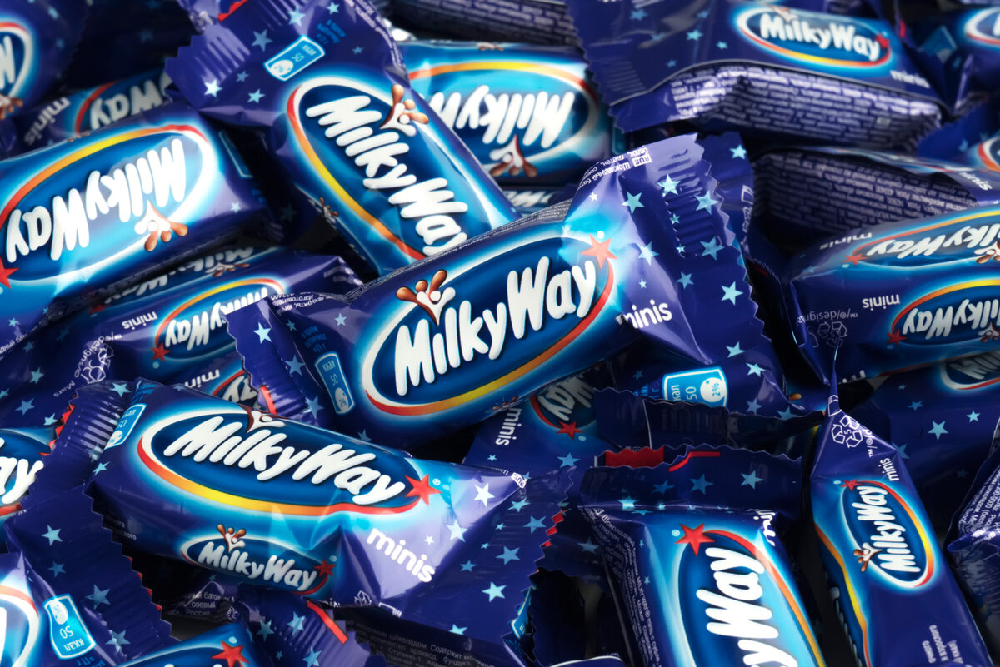

Шоколaдки к чаю
 Эль примоомомомомомо
Эль примоомомомомомо
8 МЕСТО

Miki Way— Американская версия
Американская версия шоколадного батончика Milky Way сделана из шоколадной нуги, сверху покрытой молочным шоколадом (внутри — карамелью). Её рецепт является эквивалентом рецепта шоколадного батончика Mars в остальном мире.[значимость факта?]
Европейская и австралийская версии
Европейская версия шоколадного батончика не покрыта карамелью. Ее рецепт является аналогом рецепта шоколадного батончика «3 мушкетёра». Она состоит из нуги, которая намного легче, чем нуга шоколадного батончика Mars. Из-за низкой плотности (0,88 г/см³) Milky Way плавает в молоке без погружения. Это свойство батончика было использовано для рекламной кампании в Германии, Франции, Польше, Великобритании и на постсоветском пространстве ранее. Европейская версия шоколадного батончика имеет ванильный вкус, до 1989 года имела шоколадный вкус. Австралийская версия шоколадного батончика имеет шоколадный вкус.[значимость факта?]